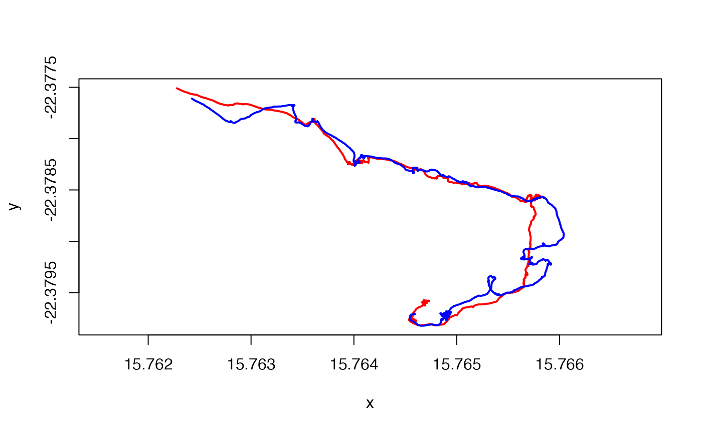
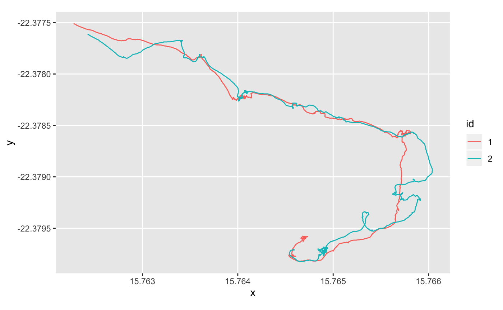

Under the hood, a track table is just a simple data frame of class data.frame, tibble or data.table with a few extra bells and whistles. This means that you can manipulate a track table same way you would a data frame of any of these three classes.
To create a track table based on data.frame, do:
t_df <- track(x = tracks$x, y = tracks$y, t = tracks$t, id = tracks$id,
proj = "+proj=longlat", tz = "Africa/Windhoek", table = "df")
head(t_df)## Track table [6 observations]
## Number of tracks: 1
## Dimensions: 2D
## Geographic: TRUE
## Projection: +proj=longlat +ellps=WGS84
## Table class: data frame
## id t x y
## 1 1 2015-09-10 07:00:00 15.76468 -22.37957
## 2 1 2015-09-10 07:00:01 15.76468 -22.37957
## 3 1 2015-09-10 07:00:04 15.76468 -22.37958
## 4 1 2015-09-10 07:00:05 15.76468 -22.37958
## 5 1 2015-09-10 07:00:08 15.76467 -22.37959
## 6 1 2015-09-10 07:00:09 15.76467 -22.37959To create a track table based on tibble, do:
t_tbl <- track(x = tracks$x, y = tracks$y, t = tracks$t, id = tracks$id,
proj = "+proj=longlat", tz = "Africa/Windhoek", table = "tbl")
t_tbl ## Track table [7194 observations]
## Number of tracks: 2
## Dimensions: 2D
## Geographic: TRUE
## Projection: +proj=longlat +ellps=WGS84
## Table class: tibble
## # A tibble: 7,194 x 4
## id t x y
## <chr> <dttm> <dbl> <dbl>
## 1 1 2015-09-10 07:00:00 15.8 -22.4
## 2 1 2015-09-10 07:00:01 15.8 -22.4
## 3 1 2015-09-10 07:00:04 15.8 -22.4
## 4 1 2015-09-10 07:00:05 15.8 -22.4
## 5 1 2015-09-10 07:00:08 15.8 -22.4
## 6 1 2015-09-10 07:00:09 15.8 -22.4
## 7 1 2015-09-10 07:00:10 15.8 -22.4
## 8 1 2015-09-10 07:00:11 15.8 -22.4
## 9 1 2015-09-10 07:00:12 15.8 -22.4
## 10 1 2015-09-10 07:00:13 15.8 -22.4
## # … with 7,184 more rowsTo create a track table based on data.table, do:
t_dt <- track(x = tracks$x, y = tracks$y, t = tracks$t, id = tracks$id,
proj = "+proj=longlat", tz = "Africa/Windhoek", table = "dt")
t_dt## Track table [7194 observations]
## Number of tracks: 2
## Dimensions: 2D
## Geographic: TRUE
## Projection: +proj=longlat +ellps=WGS84
## Table class: data table
## id t x y
## 1: 1 2015-09-10 07:00:00 15.76468 -22.37957
## 2: 1 2015-09-10 07:00:01 15.76468 -22.37957
## 3: 1 2015-09-10 07:00:04 15.76468 -22.37958
## 4: 1 2015-09-10 07:00:05 15.76468 -22.37958
## 5: 1 2015-09-10 07:00:08 15.76467 -22.37959
## ---
## 7190: 2 2015-09-10 07:59:55 15.76246 -22.37763
## 7191: 2 2015-09-10 07:59:56 15.76245 -22.37763
## 7192: 2 2015-09-10 07:59:57 15.76244 -22.37762
## 7193: 2 2015-09-10 07:59:58 15.76243 -22.37762
## 7194: 2 2015-09-10 07:59:59 15.76243 -22.37761You can check whether an object is a track table as follows:
## [1] TRUE## [1] TRUE## [1] TRUEYou can check whether a track table contains geographic coordinates or not as follows:
## [1] TRUE## [1] TRUE## [1] TRUEYou can access the different parts (rows, columns, elements) of a track table as follows:
## [1] "1" "1" "1" "1" "1" "1"## [1] "1" "1" "1" "1" "1" "1"## [1] "1" "1" "1" "1" "1" "1"## [1] "2015-09-10 07:00:00 CAT" "2015-09-10 07:00:01 CAT"
## [3] "2015-09-10 07:00:04 CAT" "2015-09-10 07:00:05 CAT"
## [5] "2015-09-10 07:00:08 CAT" "2015-09-10 07:00:09 CAT"## [1] "2015-09-10 07:00:00 CAT" "2015-09-10 07:00:01 CAT"
## [3] "2015-09-10 07:00:04 CAT" "2015-09-10 07:00:05 CAT"
## [5] "2015-09-10 07:00:08 CAT" "2015-09-10 07:00:09 CAT"## [1] "2015-09-10 07:00:00 CAT" "2015-09-10 07:00:01 CAT"
## [3] "2015-09-10 07:00:04 CAT" "2015-09-10 07:00:05 CAT"
## [5] "2015-09-10 07:00:08 CAT" "2015-09-10 07:00:09 CAT"## id
## 1 1
## 2 1
## 3 1
## 4 1
## 5 1
## 6 1## # A tibble: 7,194 x 1
## id
## <chr>
## 1 1
## 2 1
## 3 1
## 4 1
## 5 1
## 6 1
## 7 1
## 8 1
## 9 1
## 10 1
## # … with 7,184 more rows## Track table [1 observations]
## Number of tracks: 1
## Dimensions: 2D
## Geographic: TRUE
## Projection: +proj=longlat +ellps=WGS84
## Table class: data table
## id t x y
## 1: 1 2015-09-10 07:00:00 15.76468 -22.37957## Track table [1 observations]
## Number of tracks: 1
## Dimensions: 2D
## Geographic: TRUE
## Projection: +proj=longlat +ellps=WGS84
## Table class: data frame
## id t x y
## 1 1 2015-09-10 07:00:00 15.76468 -22.37957## Track table [1 observations]
## Number of tracks: 1
## Dimensions: 2D
## Geographic: TRUE
## Projection: +proj=longlat +ellps=WGS84
## Table class: tibble
## # A tibble: 1 x 4
## id t x y
## <chr> <dttm> <dbl> <dbl>
## 1 1 2015-09-10 07:00:00 15.8 -22.4## Track table [1 observations]
## Number of tracks: 1
## Dimensions: 2D
## Geographic: TRUE
## Projection: +proj=longlat +ellps=WGS84
## Table class: data table
## id t x y
## 1: 1 2015-09-10 07:00:00 15.76468 -22.37957## [1] "1"## # A tibble: 1 x 1
## id
## <chr>
## 1 1## id
## 1: 1Note that the results varies depending on the underling data frame class.
By combining the commands above with the <- operator, you can easily modify the content of a track table. For example:
## Track table [6 observations]
## Number of tracks: 1
## Dimensions: 2D
## Geographic: TRUE
## Projection: +proj=longlat +ellps=WGS84
## Table class: data frame
## id t x y
## 1 0 2015-09-10 07:00:00 15.76468 -22.37957
## 2 0 2015-09-10 07:00:01 15.76468 -22.37957
## 3 0 2015-09-10 07:00:04 15.76468 -22.37958
## 4 0 2015-09-10 07:00:05 15.76468 -22.37958
## 5 0 2015-09-10 07:00:08 15.76467 -22.37959
## 6 0 2015-09-10 07:00:09 15.76467 -22.37959## Track table [6 observations]
## Number of tracks: 1
## Dimensions: 2D
## Geographic: TRUE
## Projection: +proj=longlat +ellps=WGS84
## Table class: data frame
## id t x y
## 1 1 2015-09-10 07:00:00 15.76468 -22.37957
## 2 1 2015-09-10 07:00:01 15.76468 -22.37957
## 3 1 2015-09-10 07:00:04 15.76468 -22.37958
## 4 1 2015-09-10 07:00:05 15.76468 -22.37958
## 5 1 2015-09-10 07:00:08 15.76467 -22.37959
## 6 1 2015-09-10 07:00:09 15.76467 -22.37959You can access the projection of a track table as follows.
## CRS arguments: +proj=longlat +ellps=WGS84You can modify in place the projection of a track table as follows. This will automatically convert the coordinates in the appropriate projection system.
projection(t_df) <- "+proj=somerc +lat_0=46.9524056 +lon_0=7.43958333 +ellps=bessel +x_0=2600000 +y_0=1200000 +towgs84=674.374,15.056,405.346 +units=m +k_0=1 +no_defs"
head(t_df)## Track table [6 observations]
## Number of tracks: 1
## Dimensions: 2D
## Geographic: TRUE
## Projection: +proj=somerc +lat_0=46.9524056 +lon_0=7.43958333 +ellps=bessel +x_0=2600000 +y_0=1200000 +towgs84=674.374,15.056,405.346 +units=m +k_0=1 +no_defs
## Table class: data frame
## id t x y
## 1 1 2015-09-10 07:00:00 4926624 -9215951
## 2 1 2015-09-10 07:00:01 4926624 -9215951
## 3 1 2015-09-10 07:00:04 4926624 -9215953
## 4 1 2015-09-10 07:00:05 4926624 -9215954
## 5 1 2015-09-10 07:00:08 4926623 -9215956
## 6 1 2015-09-10 07:00:09 4926622 -9215957## Track table [6 observations]
## Number of tracks: 1
## Dimensions: 2D
## Geographic: TRUE
## Projection: +proj=longlat +ellps=WGS84
## Table class: data frame
## id t x y
## 1 1 2015-09-10 07:00:00 15.76468 -22.37957
## 2 1 2015-09-10 07:00:01 15.76468 -22.37958
## 3 1 2015-09-10 07:00:04 15.76468 -22.37958
## 4 1 2015-09-10 07:00:05 15.76468 -22.37958
## 5 1 2015-09-10 07:00:08 15.76467 -22.37959
## 6 1 2015-09-10 07:00:09 15.76467 -22.37959If you prefer not to modify the original object, you can create a new one with the new projection as follows.
t_df_new_proj <- project(t_df, "+proj=somerc +lat_0=46.9524056 +lon_0=7.43958333 +ellps=bessel +x_0=2600000 +y_0=1200000 +towgs84=674.374,15.056,405.346 +units=m +k_0=1 +no_defs")
head(t_df_new_proj)## Track table [6 observations]
## Number of tracks: 1
## Dimensions: 2D
## Geographic: TRUE
## Projection: +proj=somerc +lat_0=46.9524056 +lon_0=7.43958333 +ellps=bessel +x_0=2600000 +y_0=1200000 +towgs84=674.374,15.056,405.346 +units=m +k_0=1 +no_defs
## Table class: data frame
## id t x y
## 1 1 2015-09-10 07:00:00 4926624 -9215951
## 2 1 2015-09-10 07:00:01 4926624 -9215951
## 3 1 2015-09-10 07:00:04 4926624 -9215953
## 4 1 2015-09-10 07:00:05 4926624 -9215954
## 5 1 2015-09-10 07:00:08 4926623 -9215956
## 6 1 2015-09-10 07:00:09 4926622 -9215957Track tables are mostly compatible with the functions from the tidyverse (with one notable exception, see below). For instance, you can use all the dplyr verbs to filter, mutate, group, etc., a track table, the same way you would do with a tibble or a data.frame.
if (requireNamespace("dplyr", quietly = TRUE)) {
library(dplyr)
t_df %>%
filter(., t < as.POSIXct("2015-09-10 07:01:00", tz = "Africa/Windhoek")) %>%
head(.)
}##
## Attaching package: 'dplyr'## The following objects are masked from 'package:stats':
##
## filter, lag## The following objects are masked from 'package:base':
##
## intersect, setdiff, setequal, union## Track table [6 observations]
## Number of tracks: 1
## Dimensions: 2D
## Geographic: TRUE
## Projection: +proj=longlat +ellps=WGS84
## Table class: data frame
## id t x y
## 1 1 2015-09-10 07:00:00 15.76468 -22.37957
## 2 1 2015-09-10 07:00:01 15.76468 -22.37958
## 3 1 2015-09-10 07:00:04 15.76468 -22.37958
## 4 1 2015-09-10 07:00:05 15.76468 -22.37958
## 5 1 2015-09-10 07:00:08 15.76467 -22.37959
## 6 1 2015-09-10 07:00:09 15.76467 -22.37959if (requireNamespace("dplyr", quietly = TRUE)) {
library(dplyr)
t_df %>%
group_by(., id) %>%
summarize(., x = mean(x),
y = mean(y))
}## # A tibble: 2 x 3
## id x y
## <chr> <dbl> <dbl>
## 1 1 15.8 -22.4
## 2 2 15.8 -22.4bind_rows is a notable exception to the rule above. For technical reasons in the implementation of bind_rows, it cannot retain all the attributes of objects that are not pure tibble or data.frame (e.g., track tables have an extra attribute to store the projection of the coordinates, which is stripped by bind_rows). For this reason, trackdf provides a special version of bind_rows called rbind_track to achieve the same purpose.
With data.frame based track tables:
if (requireNamespace("dplyr", quietly = TRUE)) {
t_df1 <- dplyr::filter(t_df, id == "1")
t_df2 <- dplyr::filter(t_df, id == "2")
} else {
t_df1 <- t_df[t_df$id == "1", ]
t_df2 <- t_df[t_df$id == "2", ]
}
head(rbind_track(t_df1, t_df2))With tibble based track tables:
if (requireNamespace("dplyr", quietly = TRUE)) {
t_tbl1 <- dplyr::filter(t_tbl, id == "1")
t_tbl2 <- dplyr::filter(t_tbl, id == "2")
} else {
t_tbl1 <- t_tbl[t_tbl$id == "1", ]
t_tbl2 <- t_tbl[t_tbl$id == "2", ]
}
rbind_track(t_tbl1, t_tbl2)With data.table based track tables:
if (requireNamespace("dplyr", quietly = TRUE)) {
t_dt1 <- dplyr::filter(t_dt, id == "1")
t_dt2 <- dplyr::filter(t_dt, id == "2")
} else {
t_dt1 <- t_dt[t_dt$id == "1", ]
t_dt2 <- t_dt[t_dt$id == "2", ]
}
rbind_track(t_dt1, t_dt2)You can use any plotting method accepting a data.frame, a tibble or a data.table to represent the data in a track table.
With base R:
plot(y ~ x, data = t_dt[t_dt$id == "1"], type = "l", col = "red",
xlim = range(t_dt$x), lwd = 2, asp = 1)
lines(y ~ x , data = t_dt[t_dt$id == "2"], col = "blue", lwd = 2)
With [ggplot2]{https://ggplot2.tidyverse.org/}
if (requireNamespace("ggplot2", quietly = TRUE)) {
ggplot2::ggplot(data = t_dt, mapping = ggplot2::aes(x = x, y = y, color = id)) +
ggplot2::geom_path() +
ggplot2::coord_map()
} 